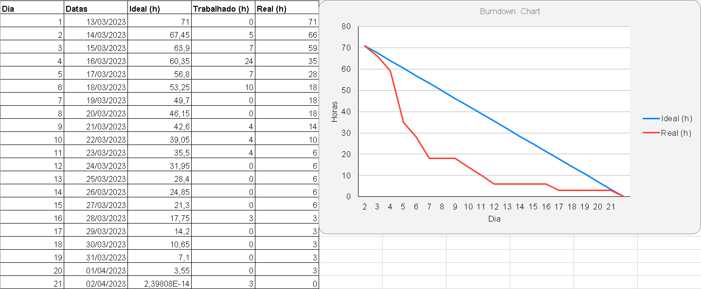
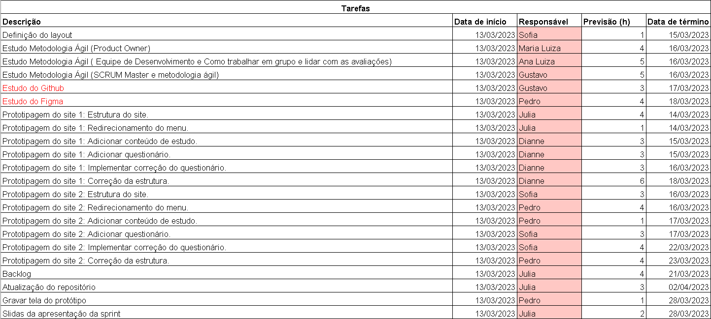

Burndown
O burndown tem como objetivo acompanhar o andamento de um projeto. Isto é,
permite que a
equipe de desenvolvimento visualize o trabalho que precisa ser realizado e acompanhe o progresso
diariamente.

Passo a passo para utilizar o burndown no método Scrum:
• Definir o escopo do projeto: Antes de começar a utilizar o burndown, é importante que
a
equipe tenha um entendimento claro do que precisa ser entregue no projeto.
• Criar o backlog do produto: A equipe deve criar uma lista com todas as
funcionalidades
que precisam ser desenvolvidas no projeto.
• Priorizar as funcionalidades do backlog com base na complexidade e valor para o
cliente.
• Estimar o esforço para cada funcionalidade do backlog, podendo ser estimada em horas,
dias ou pontos de história.
• A partir das estimativas de esforço e da data de entrega do projeto, a equipe deve
criar
um gráfico burndown que mostra o progresso do projeto ao longo do tempo.
• Atualizar e revisar o burndown chart (gráfico) diariamente. Isso permite a
visualização
do progresso do projeto e identificar qualquer desvio em relação ao plano original.
Em resumo, o burndown é uma técnica simples e eficaz para monitorar o progresso do
projeto
no método Scrum. Além disso, ajuda a equipe a identificar problemas e desvios em tempo hábil, permitindo que
tomem
medidas corretivas para manter o projeto no caminho certo.
Exemplo de Burndown:
O gráfico irá refletir o andamento do trabalho, a linha azul é o desempenho ideal, mas
não
é necessário que esteja perfeitamente igual.

As áreas de data de início até data de término devem ser preenchidas para que o gráfico
se
edite automaticamente conforme as tarefas vão sendo concluídas.
